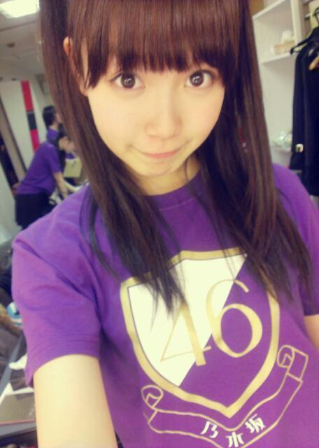
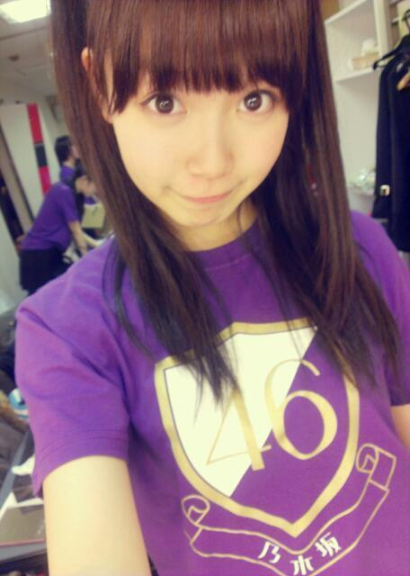

| 2013/03 20 Wed | ひめたん(*>ω<*)そ の272 |
昨日今日はレッスンしてきたよー！
明日は全握だよー！
5thライブだよ。握手会だよ。
そしてチャリティーライブだよ。
握手は第1レーンで まいやん と一緒です∩^ω^∩
まいやんお姉たまーよろしくねー＊
まいやんファンのみなさま初めましてですっ
ひめきゅんさんはお久しぶりですっ
または3日ぶりかな？
よろしくねー＊
そして
ペットボトルのキャップ5っ以上持ってって
ぜひオリジナル缶バッチ ゲットしてねー
最近 風やばいね(´・ω・｀)
昨日ひめたんは 万理華 と駅まで
相合い傘して帰りまーしーたんだけれども
傘が見事にひっくり返って
恥ずかしいことになりましたーふへへ///
想像してみよう///
あとWひなも相合い傘しとったー♪
写めは ちょっと懐かしい年末ライブ！

ほんとに直後に撮ったものです
おめめがきらきらしています
天然チークが素敵です
ちょっとメイクが崩れてるけど
まあ、ライブのお約束ってやつだね(ω)
明日は全握だよー！
5thライブだよ。握手会だよ。
そしてチャリティーライブだよ。
握手は第1レーンで まいやん と一緒です∩^ω^∩
まいやんお姉たまーよろしくねー＊
まいやんファンのみなさま初めましてですっ
ひめきゅんさんはお久しぶりですっ
または3日ぶりかな？
よろしくねー＊
そして
ペットボトルのキャップ5っ以上持ってって
ぜひオリジナル缶バッチ ゲットしてねー
最近 風やばいね(´・ω・｀)
昨日ひめたんは 万理華 と駅まで
相合い傘して帰りまーしーたんだけれども
傘が見事にひっくり返って
恥ずかしいことになりましたーふへへ///
想像してみよう///
あとWひなも相合い傘しとったー♪
写めは ちょっと懐かしい年末ライブ！

ほんとに直後に撮ったものです
おめめがきらきらしています
天然チークが素敵です
ちょっとメイクが崩れてるけど
まあ、ライブのお約束ってやつだね(ω)

 音楽聴く時のお気に入りのセトリってある？
音楽聴く時のお気に入りのセトリってある？
セトリってか順番は気にしてないけど
キセキ/北乃きい
kiss me 愛してる/℃-ute
変わらないもの/奥華子
とか好き(^^)ジャンルばらばら(^^)でも気にしない(^^)
辛いときとかにおすすめの歌とかある？
涙空/GReeeeN
とかは辛いときに聴くと
歌詞がじーんって響くものがあるってのは
数年前に経験したことあるかなー
普段は(あーいい歌だなー)しか思わないけど
じっくり聴くとうわあぁああああってなる。かな
ひめたんはロックダンスって知ってますか？
ロックな感じのダンス？え？違うの(´・ω・｀)？
 ひめたんの好きな顔文字おしえて〜〜?
ひめたんの好きな顔文字おしえて〜〜?
(＊´・ω・＊)このこ！
みゅみゅ に
「ひめたん こんな顔してる」て言われてから
愛着がありますこのこには。
まなみのりさって わかるよね？
ひめたんも バラ祭りとかに きたことあるのかなぁ（＾ω＾）？
もちろんっ！アクターの先輩だよー＊
バラ祭りのステージ行ったことあるよー
行き帰りのバス旅も楽しかった気がする(^^)
ひめたんは, タッチのアニメとか単行本を
見たり読んだことはありますか？
あ、みたことないです...
でも歌は好きだったの(〃ω〃)
だから嬉しいですー♪
 あげもりって言う名前でコメしてるけど
あげもりって言う名前でコメしてるけど
その意味知りたい？☆
おんっ！教えてー♪

(＊´・ω・＊)
コメント(148)
2013/03/20 00:18